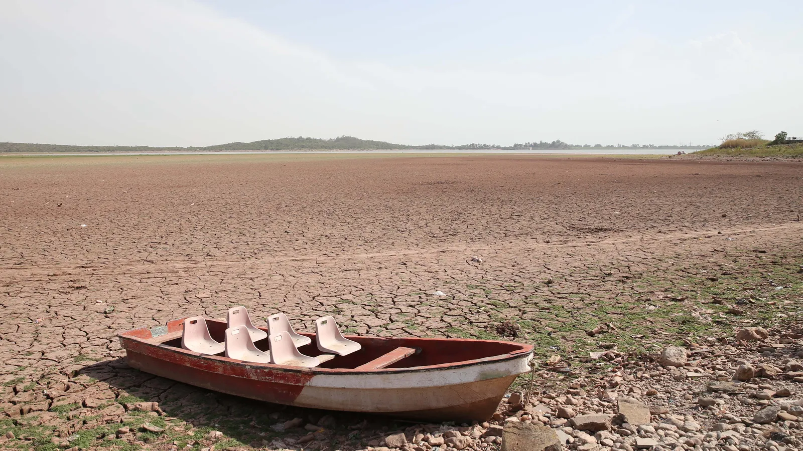

n September 2017, John Mussington was forced to evacuate his home and leave behind his animals when the small Caribbean island of Barbuda was hit by category 5 Hurricane Irma, at 185mph (300km/h). "It was devastating," says Mussington, a marine biologist and a high school principal on Barbuda. "People were traumatised, there were many buildings without roofs and we had no electricity. Our immediate concern was: how do we survive the next day?" Every building was damaged by Irma, with 23% completely destroyed. A 2018 study concluded that climate change worsened destructive hurricanes, including Irma, by increasing rainfall by between 5 and 10%. The initial shock was compounded when all of Barbuda's 1,800 residents were ordered to evacuate to their sister island, Antigua, for one month. Mussington says this completely upended his life. "That was the most traumatic of all, sitting there in Antigua, worrying about our farms, animals and businesses instead of starting the recovery," he recalls. "I'm a beekeeper and all my colonies were knocked down - I lost my business, as did many farmers and fishermen."
"When countries lose their islands because of sea level rise and extreme events, they are losing their culture and traditions. There is no adapting to that," says Le-Anne Roper, coordinator for loss and damage at the Alliance of Small Island States (Aosis). For Barbudans, the destruction of the biodiversity and local environment is a direct violation of their way of life. "Our whole culture, identity and way of life is linked to the environment and natural resources," says Mussington, adding that many Barbudans spend their spare time outdoors, fishing, hunting and camping in the wild. "It is part of who we are as Barbudans." Damaged buildings and job losses aren't the only victims of extreme weather events caused by climate change. From Barbuda to Fiji, entire cultures are at stake. But with more awareness, new technologies and strong calls for international support, these small island nations are fighting back.
 Credits: Getty Images
Start your discussion